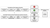
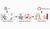

黄凯锋 (Kaifeng Huang)
黄凯锋，同济大学计算机科学与技术学院助理教授（预聘制）。此前为复旦大学软件工程实验室博士后研究员，2022 年获复旦大学博士学位。
主要研究方向包括可塑软件（malleable software）、软件/AIware 供应链与软件安全。担任 IEEE Transactions on Software Engineering、ACM Transactions on Software Engineering and Methodology、ICSE 2027、FSE 2026、ASE 2025/2024、Journal of Systems & Software 等期刊与会议的审稿人或程序委员会委员，并获 ASE 2025 杰出审稿人（Distinguished Reviewer）奖。曾获 ASE 2018 ACM SIGSOFT 杰出论文奖（Distinguished Paper Award）和 ICSME 2020 IEEE TCSE 杰出论文奖（Distinguished Paper Award）。
研究方向
-
可塑软件（Malleable Software）。 随着大语言模型编程能力的不断提升，一种新的软件范式——可塑软件——正在出现：系统不再是预先固定定义的，而是能够动态演化，以满足用户期望并适应多样的运行环境。这一范式带来了许多基础性且尚未解决的挑战。我的研究旨在推动并保障这一新范式下的软件质量与可信性。欢迎查看我们在可塑移动软件自动化功能测试方面的最新进展（arXiv'25）。
-
可信软件与 AI 供应链。我的研究致力于评估软件与 AI 供应链的安全、维护和法律风险，并研发有效的缓解策略，以保障其可信性。相关工作涵盖：第三方库依赖（EMSE'22、ICSME'20）、深度学习系统中的依赖相关缺陷（FSE'23）、大模型预训练成员推断风险（AAAI'26）、开源许可证合规（ISSTA'24）、API 弃用（ASE'21、ICSE'25）、API 兼容性（JOS'24）、库版本演化（FSE'20），以及软件/代码差异分析（ASE'18、ICSA'20）。
-
软件安全。 软件系统天然面临各类安全威胁。我的研究包括但不限于漏洞检测、评估与修复、恶意软件/数据检测以及隐私保护。主要工作涵盖：重复出现漏洞的检测（CCS'24）、漏洞数据库质量（FSE'22、ICSE'24、ASE'24），以及 PyPI、NPM 等生态中的恶意包检测（TOSEM'25、USENIX Security'25、ASE'24）。
代表性成果
|
VMUD: Detecting Recurring Vulnerabilities with Multiple Fixing Functions via Function Selection and Semantic Equivalent Statement Matching.
Kaifeng Huang
, Chenhao Lu, Yiheng Cao, Bihuan Chen, Xin Peng.
In Proceedings of the 31th ACM Conference on Computer and Communications Security, Salt Lake City, United States, accepted, 2024.
|
|
|
Vision: Identifying Affected Library Versions for Open Source Software Vulnerabilities.
Susheng Wu, Ruisi Wang,
Kaifeng Huang
, Yiheng Cao, Wenyan Song, Zhuotong Zhou, Yiheng Huang, Bihuan Chen, Xin Peng.
In Proceedings of the 39th IEEE/ACM International Conference on Automated Software Engineering, Sacramento, California, United States, pp. 1447-1459, 2024.
|
 |
|
Identifying Affected Libraries and Their Ecosystems for Open Source Software Vulnerabilities.
Susheng Wu, Wenyan Song,
Kaifeng Huang
, Bihuan Chen, Xin Pen.
In Proceedings of the 46th
IEEE/ACM International Conference on Software Engineering (ICSE), Lisbon, Portugal, pp. 162: 1-12, 2024.
|
 |